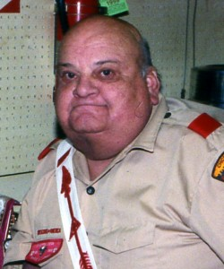

Norman C. Buettner – 1965
Norman C. Buettner
Vigil Name
Wipungweu Psakulin
"Brown Squirrel"
Norman C. Buettner was born on Wednesday November 24, 1937 at 9:27 AM at the Lewis Memorial Maternity Hospital in Chicago, the second son of Herman Buettner (07/26/1901 – 08/01/1984) and Agnes Etteldorf (06/20/1903 – 06/01/1978). He was baptized at Visitation Parish and his first home was 5610 S. Elizabeth Street. Norm attended St. Christina Grammar School and completed his studies at St. Willibrord's High School in 1955.
Norm's true love was Scouting. He started Explorer Post 2780 in the early 1960's and served as its principal advisor for over 15 years. More than just a meeting facilitator for the youth of Alsip and Blue Island he became the role model for countless youth members. Norm always lacked pretension and tried to spur the interest of his "children". He and the Post traveled to Philmont, Pike's Peak, Mt. Rushmore, the Grand Tetons, Yellowstone, the Badlands of South Dakota, and to numerous national explorer meetings on their annual trips.
Norm received his Scouter's Award in 1969, was recognized by Chippewa District with the Award of Merit in 1971, and received the Scouter's Key in 1972. He served as an Explorer Advisor, District Camping Chairman, Unit Commissioner, and Merit Badge Counselor throughout the history of Chippewa District from 1967 to 1980. Norm was inducted into the O/A at Camp Crete on May 17, 1969. This started his lifelong passion for the Order and its works.
On May 23, 1971, he sealed his membership in the Order by accepting the obligations of the Brotherhood Honor at the Ojibwa Chapter Fellowship at Camp Crete. For his outstanding efforts, Owasippe Lodge recognized Norm with the Vigil Honor. He faithfully kept that Vigil on the night of August 6, 1976, the following day becoming known forever more as Wipungweu Psakulin, or the Brown Squirrel.
The impact Norm had on the Order of the Arrow in Chippewa and Sauk Trail District, and now Arrowhead District is inestimable. Between Norm and his disciples, the O/A was steeped in tradition and guided as such for almost thirty years. Norm was an accountant/auditor by trade. He instilled many organizational and leadership skills in the youth he led, as well as a passion for autonomy.
In his personal life, Norm never failed to answer the call of his family. With his mother's death in 1978, his elderly father was left alone in Punta Gorda, Florida. Norm made one of the most difficult decisions of his life and relocated to Florida the first week of October 1980. Within two years, disaster after disaster struck. His father died, he lost his job, his health began to fail.
The story almost ended there, but he and his Scouting friends never lost touch. After a conversation in 1998 in which he remarked that, "I live with a bunch of dead and dying crazy people. I don't want to die in this nursing home," another plot was hatched in the fine tradition of Achewon Chapter. With coordination by Francis Podbielski, Tony Young and John Clement took a 1200-mile road trip to Brazoria, Texas and showed up at the doorstep of that nursing home in late September 1998. Norm was dumbfounded and cried tears of joy as he and his belongings were cheerfully packed up and he was returned the life in Chicago he lost twenty years prior.
Within six months, Norm was again serving as a Troop Committee member and had secured a new mobile home in Dixmoor. Although his membership in the O/A never lapsed, he returned to active duty in Achewon Chapter at its fellowships, merit badge clinics, and other activities. While never regaining his health completely, but he was independent and happy and relished in the activities of the Order. Norm passed away quietly at home on Saturday, October 25, 2003.
And at the end of the day, it really does not matter how much money you have, but rather how many people's lives you touch in a positive way. It is in this sense Norm Buettner – the little Brown Squirrel – was one of the wealthiest men to walk the face of the Earth. May he rest in peace.
